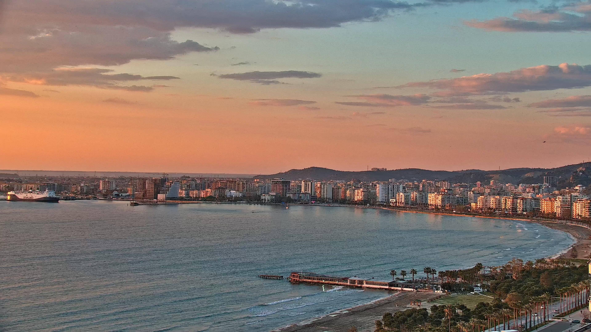
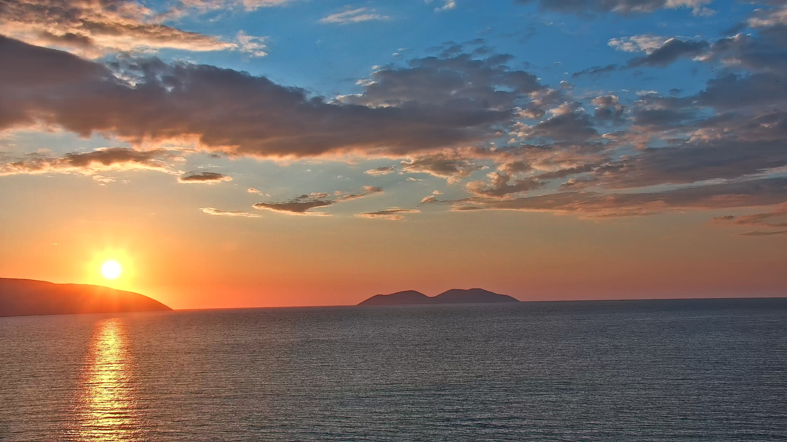
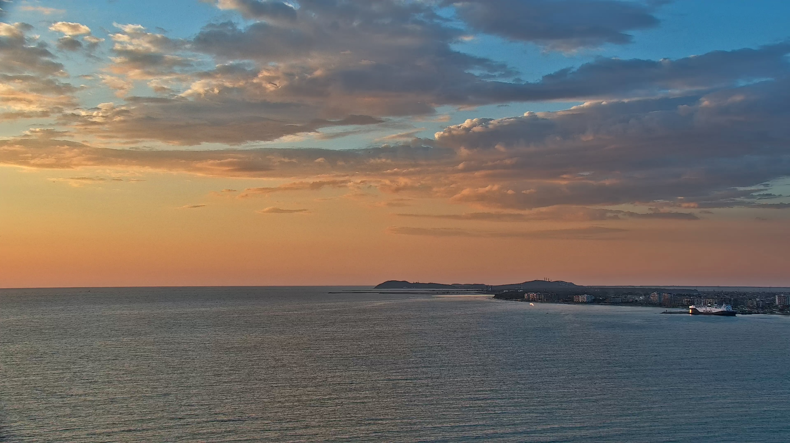
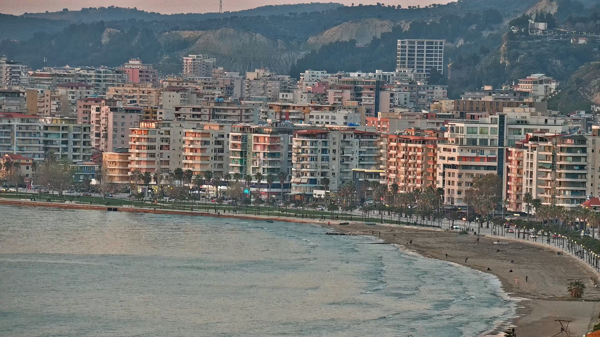

Watch real-time views from Vlore Bay across the Lungomare promenade, the Ionian Sea, Sazan Island, Karaburun Peninsula and nearby port activity from southern Albania.

Vlore Bay
Sazan sunset
Open sea & port
Lungomare detailIonian LiveCam is a real-time coastal webcam from Vlore, Albania. The camera captures the curve of Vlore Bay, the Lungomare promenade, changing sea conditions, ferries, port movement, sunsets and clear views toward Sazan Island.
This page is designed as a proper destination website, not just a landing page. It gives context for the location, the scenery and the best reasons to watch, while still pushing visitors toward the full YouTube live experience.
Good search targets for this page include: Vlore Albania webcam, Vlore live webcam, Lungomare webcam, Ionian Sea webcam, Sazan Island live view and port webcam Albania.
Depending on the preset or angle, the camera can show the bay, open sea, sunset line, Sazan Island, Karaburun side, the waterfront and city detail along Lungomare.
One of the signature angles. Strong for sunsets, cloud light and calm sea atmosphere.
Ferries, open water, changing weather and the wider coastal frame from the bay side.
A closer urban coastal view showing the waterfront curve, buildings and beach line.
The map is intentionally approximate. It places the webcam around the Lungomare area of Vlore, Albania, without exposing a precise position.
The site should pull search traffic and directory traffic, then convert a good part of that traffic to YouTube. That is why the live preview is here, but the stronger call-to-action is always to open the full live stream on YouTube.
This keeps the website useful for Google and webcam directories, but stops it from becoming a dead end that steals traffic from the channel.